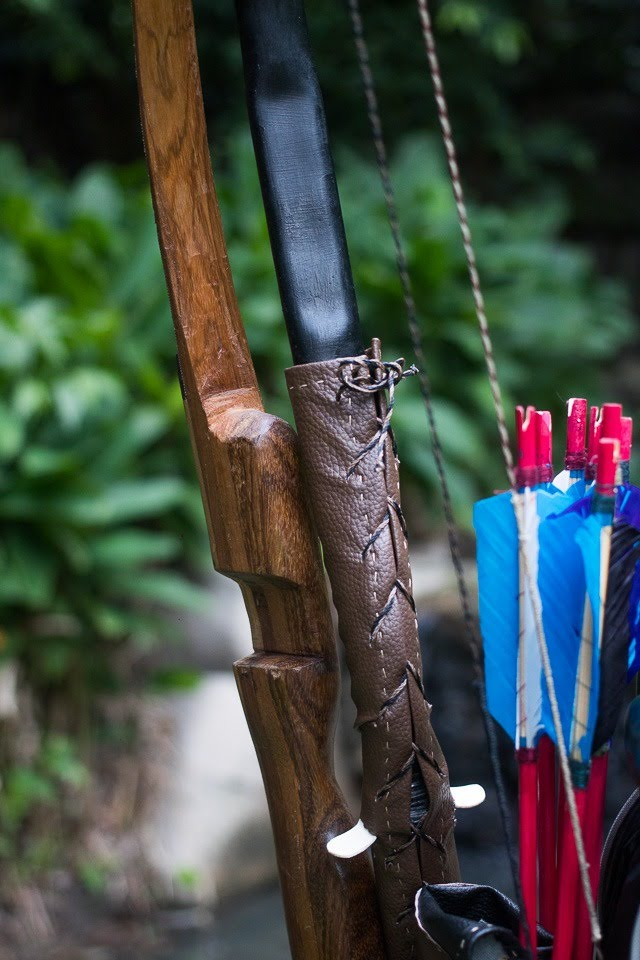

Tenha seu arco mais 4 flechas
e ajava com até 50% de desconto!
Vários modelos de arcos à sua espera!
Itens Mais Vendidos

Super Kit, Arco de PVC Mongol + Arco de Madeira + Flechas + Aljava
15% de desconto
Super Kit, Arco de Madeira + Flechas + Aljava
25% de desconto
Super Kit, Arco de PVC Mongol + Flechas + Aljava
35% de desconto
Tá com dúvida de qual o melhor arco pra você?
Aqui vão algumas dicas pra você.
Entenda que o arco atira a flecha pela quantidade de energia potencial que ele é capaz de armazenar.
Quanto mais recurvado o arco for, provavelmente ele armazenará mais energia potencial, o que gera mais energia sinética no momento do disparo, gerando mais velocidade de voo da flecha.
Porém, se ele gera mais energia potencial, logo, mesmo tendo a mesma libragem de outros modelos de arco, será mais complicado manter a ancoragem (manter a corda puxada antes de realizar o disparo)!